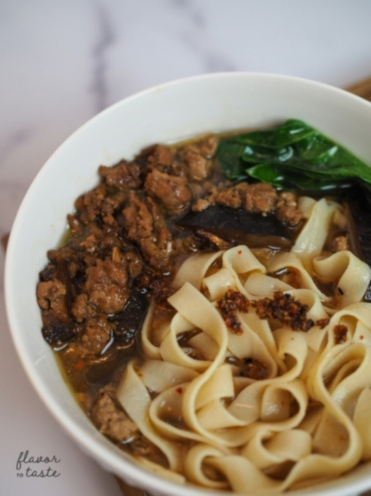

Hakka Board Noodles (Ban Mian/板面)
Ingredients
Noodle Dough:
- 400 g of all purpose flour (approximately 3 cups)
- 1 egg
- 150 ml of water (a little more than half cup)
- 3 tbsp of oil
Noodle Broth:
- 100 g of dried anchovies (interiors removed)
- 1 tbsp of oil
- 1250 mL of water
- 1 small slice of ginger
- 10 mushroom stalks
- 1 teaspoon of salt
Mushroom Pork:
- 1 lb of ground pork
- 1 tsp of water
- 1 bulb of shallots (thinly sliced)
- 10 shiitake mushrooms (sliced and stems reserved for broth)
- 2 tbsp of soy sauce
- 2 tbsp of dark soy sauce
- 1 tbsp of oyster sauce
- 1 tbsp of sesame oil
- 1 tsp of sugar
- 1 cup of water
Chili Oil:
- 1 cup of dried shrimp
- 1 cup of dried chilis or dried chili flakes
- 1 bulb of shallot
- 1 bulb of garlic
- 1/2 cup of olive oil
Directions
Using a mixer and paddle attachment, add 3 cups of all purpose flour. Make a little well in the middle and add 1 egg. Mix on low setting (2-3) for a couple of minutes.
Slowly add 150 mL of water and continue mixing for a couple of minutes.
Add 1 tbsp of oil and keep mixing until everything is well incorporated.
Pour the mixture out onto a floured working surface and knead by hand until the dough is one big ball.
Cover with a damp cloth and rest for 30 minutes.
Clean dried anchovies by removing the guts in the middle. This step is optional but it helps the broth taste cleaner and fresher.
Heat up 1 tbsp of oil on medium heat and saute anchovies until they turn golden brown.
Set aside a few tablespoons of the anchovies for a crunchy noodle garnish for later.
Add 1250 mL of water followed by the shiitake mushroom stalks, ginger, and 1 tsp salt.
Let it continue boiling on medium for about 30 minutes and keep on low setting.
Heat up 1 tbsp of oil on medium heat and saute the thinly sliced shallots.
Once the shallots turn golden brown, reserve some on the side for noodle garnish.
Add 1 lb of ground pork and saute until mostly browned. Add sliced shiitake mushrooms followed by 2 tbsp of Shaoxing cooking wine.
When the cooking wine has mostly evaporated, add 2 tbsp of soy sauce, 2 tbsp of dark soy sauce, 1 tbsp of oyster sauce, and 1 tsp of sugar. Mix well.
Once the sauces have mostly evaporated, add 1 cup of water.
Let it simmer down until most of the liquid has evaporated.
In a food processor, blend dried shrimp until it becomes a powder. Then blend shallot and garlic with 1 tbsp of olive oil.
Heat up a medium sized pan on medium with ½ cup of olive oil. Saute the shallot and garlic blend until fragrant.
Add dried shrimp and continue sauteing until fragrant.
Add dried chili flakes and continue cooking until it dries and turns into a dark red color.
Set aside in a jar. Makes 3 mini jars and can be stored in the refrigerator for a couple of weeks.
Heat up a pot with boiling water and a dash of salt.
Take the big noodle dough out and cut into quarters. Flatten the dough with a rolling pin until it is even. You can shape the noodle to a square shape by helping it along with a bench scraper or cutting the edges.
If you don’t have a pasta rolling machine, simply flatten the dough until desired thickness. When cooking, tear pieces of dough into the boiling water.
If you have a pasta rolling machine and want long strands of noodles, feed the dough through the roller on 1 for a couple of times. Repeat this process until it can feed through setting #4.
After it has been fed through setting #4 a few times, run the dough through a fettuccine cutter.
Once you have the desired amount of fettucine noodles you want, cook them in the boiling water for 1-2 minutes. The noodles should be al dente. If cooking the torn dough, cooking time will depend on the thickness. It will take a few minutes longer to cook. Adjust accordingly by tasting a little piece of the noodle frequently to gauge.
In a big bowl, add the cooked noodles.
Heat up broth and add some leafy greens. When the veggies are cooked, carefully ladle the broth into the noodle bowl.
Top with mushroom ground pork, chili oil and slurp up all the delicious umaminess!
Using a mixer and paddle attachment, add 3 cups of all purpose flour. Make a little well in the middle and add 1 egg. Mix on low setting (2-3) for a couple of minutes.
Slowly add 150 mL of water and continue mixing for a couple of minutes.
Add 1 tbsp of oil and keep mixing until everything is well incorporated.
Pour the mixture out onto a floured working surface and knead by hand until the dough is one big ball.
Cover with a damp cloth and rest for 30 minutes.
Clean dried anchovies by removing the guts in the middle. This step is optional but it helps the broth taste cleaner and fresher.
Heat up 1 tbsp of oil on medium heat and saute anchovies until they turn golden brown.
Set aside a few tablespoons of the anchovies for a crunchy noodle garnish for later.
Add 1250 mL of water followed by the shiitake mushroom stalks, ginger, and 1 tsp salt.
Let it continue boiling on medium for about 30 minutes and keep on low setting.
Heat up 1 tbsp of oil on medium heat and saute the thinly sliced shallots.
Once the shallots turn golden brown, reserve some on the side for noodle garnish.
Add 1 lb of ground pork and saute until mostly browned. Add sliced shiitake mushrooms followed by 2 tbsp of Shaoxing cooking wine.
When the cooking wine has mostly evaporated, add 2 tbsp of soy sauce, 2 tbsp of dark soy sauce, 1 tbsp of oyster sauce, and 1 tsp of sugar. Mix well.
Once the sauces have mostly evaporated, add 1 cup of water.
Let it simmer down until most of the liquid has evaporated.
In a food processor, blend dried shrimp until it becomes a powder. Then blend shallot and garlic with 1 tbsp of olive oil.
Heat up a medium sized pan on medium with ½ cup of olive oil. Saute the shallot and garlic blend until fragrant.
Add dried shrimp and continue sauteing until fragrant.
Add dried chili flakes and continue cooking until it dries and turns into a dark red color.
Set aside in a jar. Makes 3 mini jars and can be stored in the refrigerator for a couple of weeks.
Heat up a pot with boiling water and a dash of salt.
Take the big noodle dough out and cut into quarters. Flatten the dough with a rolling pin until it is even. You can shape the noodle to a square shape by helping it along with a bench scraper or cutting the edges.
If you don’t have a pasta rolling machine, simply flatten the dough until desired thickness. When cooking, tear pieces of dough into the boiling water.
If you have a pasta rolling machine and want long strands of noodles, feed the dough through the roller on 1 for a couple of times. Repeat this process until it can feed through setting #4.
After it has been fed through setting #4 a few times, run the dough through a fettuccine cutter.
Once you have the desired amount of fettucine noodles you want, cook them in the boiling water for 1-2 minutes. The noodles should be al dente. If cooking the torn dough, cooking time will depend on the thickness. It will take a few minutes longer to cook. Adjust accordingly by tasting a little piece of the noodle frequently to gauge.
In a big bowl, add the cooked noodles.
Heat up broth and add some leafy greens. When the veggies are cooked, carefully ladle the broth into the noodle bowl.
Top with mushroom ground pork, chili oil and slurp up all the delicious umaminess!